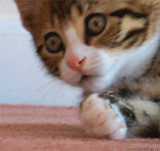

-
SUŅI
- Suns jeb mājas suns zināms arī kā cilvēka labākais draugs(Canis lupus familiaris) ir suņu dzimtas (Canidae) plēsējs, kas ir viena no pelēkā vilka (Canis lupus) pasugām.
- Cilvēks pieradināja vienu no pelēkā vilka pasugām apmēram pirms apmēram 15 000 gadu Centrālāzijā.
- Zinātnieki uzskata, ka bez suņu palīdzības, kas vilka nartas, cilvēki nebūtu šķērsojuši Beringa jūras šaurumu.
- Ilgo gadu laikā, ko suns pavadījis kopā ar cilvēku, tas ir attīstījis izcilas prāta spējas un spēju interaktīvi komunicēt ar cilvēku.
- Šobrīd pasaulē ir apmēram 400 miljoni suņu.
KAĶI
- Mājas kaķis jeb kaķis (Felis silvestris catus) ir mazs, plēsīgs kaķu dzimtas zīdītājs, kurš pieradināts pirms vairāk nekā 9500 gadiem.
- Saskaņā ar ģenētiskajiem pētījumiem, visi mājas kaķi ir domesticēti no meža kaķa pasugas Āfrikas savvaļas kaķa (Felis silvestris lybica).
- Kaķiem var iemācīt izpildīt dažādas vienkāršas komandas.
- Kaķi spēj iemācīties manipulēt ar dažādiem vienkāršiem mehānismiem, piemēram, tie māk atvērt durvis, izmantojot durvju rokturus.
- Kopumā pasaulē ir aptuveni 600 miljoni kaķu.

- 